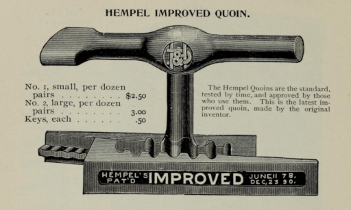

Frequently Asked Questions
Everything you need to know about Quoinlock
What's the story behind the name "Quoinlock"?
The name "Quoinlock" comes from traditional letterpress printing. In letterpress, a quoin (pronounced "coin") is an expandable wedge device used to lock type and printing blocks firmly in place within the chase—the metal frame that holds the printing form. Printers would tighten quoins to secure everything perfectly before printing, ensuring nothing shifted during the press run.

Just as quoins locked type in place to ensure consistent, accurate printing, Quoinlock helps you lock your book metadata in place, so it reads the same at Bowker, at the retailers and in the library catalog. We carry forward that tradition of precision and reliability from the age of hand-set type into the modern world of digital book distribution.
What is Quoinlock?
Quoinlock is a metadata toolbox for publishers. It shows you how your books appear in the official Bowker record, at retailers and in library catalogs, including the Library of Congress. It tells you when any of that changes, and gives you tools to produce the metadata the industry asks for: PCIP blocks, ONIX records, LC call number estimates and author identifiers.
Who is Quoinlock for?
Independent and small presses managing a list, self-publishers and authors seeing a book through launch, and the production and cataloging staff who keep metadata accurate. If you have ISBNs, Quoinlock is built for you. See Use Cases for examples.
Where does Quoinlock's data come from?
Quoinlock combines several authoritative sources with what the market actually shows:
- Bowker Books In Print: the official US record for your ISBN
- Library of Congress: MARC records, LCCNs, classification, subject and name authorities
- Ingram: distribution catalog data (via Bookfinity)
- Retailers and library sites: Amazon, Barnes & Noble, Bookshop.org, WorldCat and more
- Research library catalogs: about 50 national, state and university libraries
- Identity registries: VIAF, ISNI, ORCID and Wikidata for author identity
Which sites does Quoinlock monitor?
Up to 44 sources, organized into packages. Every plan includes the Base package: Bowker Books In Print, the Library of Congress, Amazon, Barnes & Noble, Bookshop.org and Google Books. Add-on packages cover major retailers (Walmart, Target, Books-A-Million, Powell's and more), 25 independent bookstores, library sites (WorldCat and LibraryThing), and specialty sites such as Goodreads, Edelweiss+ and AbeBooks. See Pricing for the full list.
How often are my books checked?
- Retail and library listings: every day
- Library of Congress MARC records: every day
- Bowker Books In Print records: every week
- New releases: twice a day while the title is in its launch window
You can also refresh any source on demand from a book's page.
What changes does Quoinlock detect?
- Price changes
- Availability and stock status
- A listing appearing at, or disappearing from, a source
- Metadata changes such as title, contributors and description
- Changes to your Bowker Books In Print record
- Changes to your Library of Congress MARC record, including when your LCCN is assigned
How will I be notified?
By email, either immediately or as a daily or weekly digest. You choose which kinds of change you hear about, set a minimum price-change threshold, and set quiet hours. Every Monday you also get a Weekly Watch Summary covering coverage, new listings and the week's changes.
Does the LC Call Number Calculator give me an exact call number?
It gives you an estimate. If the Library of Congress has already classified your book, Quoinlock shows LC's own call number. If not, the calculator derives a class from LC's classification data and subject headings, and fits the author Cutter against LC's shelflist. It's a strong starting point for a PCIP block or a cataloger, but only the Library of Congress assigns the final call number.
What is a PCIP block, and do I need one?
Cataloging-in-Publication (CIP) data is the library cataloging block on a book's copyright page. Publishers who aren't eligible for the Library of Congress CIP program, including most self-publishers, often print a Publisher's Cataloging-in-Publication (PCIP) block instead, so librarians can catalog the book quickly. Quoinlock's PCIP Generator builds one from your Bowker record or ONIX file and checks it against Library of Congress data.
What is ONIX, and which versions do you support?
ONIX is the industry-standard XML format for exchanging book metadata with distributors, retailers and aggregators. The ONIX Generator produces ONIX 2.1, 3.0 and 3.1 records for any ISBN, built from Bowker and enriched from the Library of Congress. 3.0 and 3.1 output is validated against EDItEUR's official schemas. You can review and edit every field before you download.
What are ISNI, LC Name Authority and ORCID?
They are persistent identifiers that tell an author apart from everyone else with the same name. Libraries rely on the LC Name Authority File, ISNI links authors across the book supply chain, and ORCID is widely used for academic authors. Author Identity Lookup shows which of these identifiers an author already has, how confident the match is, and what to do next if they don't have one.
Does Quoinlock change my metadata at Bowker or at retailers?
No. Quoinlock reads and reports. It never edits your records anywhere. When something is wrong, it shows you where the problem is and gives you what you need to fix it at the source: a downloadable record, an ONIX file, or guidance for the right registry.
What does the Free plan include?
The Free plan monitors up to 2 ISBNs with the Base source package, and includes every tool. It doesn't expire. Upgrade whenever you need more books or more sources.
Can I upgrade or downgrade my plan?
Yes, at any time from your profile. If your catalog has more than 200 ISBNs, contact us about an Enterprise plan.
How do I get started?
- Create a free account
- Add your ISBNs. Type them, paste a list, upload a file, scan a barcode, or import a publisher's titles.
- Quoinlock fetches every source right away, then keeps watching
What kind of support do you offer?
All plans include email support. Use the contact form and we'll get back to you.